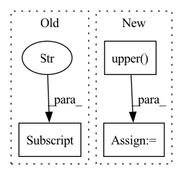

Pattern ID :29806
Before Change
sparkjob = k8s_client.get_one_crd(group=crd_info["group"],version=crd_info["version"],plural=crd_info["plural"],namespace=KFJ_NAMESPACE,name=name)
print("sparkjob %s finished, status %s"%(name, sparkjob["status"]))
if sparkjob["status"] !="Succeeded":
exit(1)
After Change
sparkjob = k8s_client.get_one_crd(group=crd_info["group"],version=crd_info["version"],plural=crd_info["plural"],namespace=KFJ_NAMESPACE,name=name)
print("sparkjob %s finished, status %s"%(name, sparkjob["status_more"]))
status = json.loads(sparkjob["status_more"]).get("applicationState", {}).get("state", "").upper()
if "FAILED" in status:
exit(1)
In pattern: SUPERPATTERN
Frequency: 4
Non-data size: 3
Instances Fragment ID: 88270050
Project Name: tencentmusic/cube-studio
Commit Name: 9952166f6f052ff3638a6713138f18feacc4f7bf
Time: 2022-07-18
Author: pengluan@tencent.com
File Name: job-template/job/spark/launcher.py
M Class Name: AnonimousClass
N Class Name: AnonimousClass
M Method Name: launch_sparkjob(1)
N Method Name: launch_sparkjob(1)
M Parent Class:
N Parent Class:
M File Name: job-template/job/spark/launcher.py
N File Name: job-template/job/spark/launcher.py
M Start Line: 171
M End Line: 178
N Start Line: 171
N End Line: 181
Before Change
config = {
"batch_mode": config_dict["algo_args"]["batch_mode"],
"train_batch_size": train_batch_size,
"lr": config_dict["algo_args"] ["lr"],
"model": {
"custom_model": "Base_Model",
"max_seq_len": episode_limit,After Change
arch = config_dict["model_arch_args"]["core_arch"]
RUNNING_NAME = "_".join([algorithm, arch, map_name])
results = tune.run(
algorithm.upper() ,
name=RUNNING_NAME,
stop=stop, config=config,
local_dir=available_local_dir, Fragment ID: 88270051
Project Name: replicable-marl/marllib
Commit Name: 9e811be12c5306ed56bbf16702c6b93ffc628e03
Time: 2022-06-13
Author: minchiuan@zju.edu.cn
File Name: marl/algos/scripts/pg_a2c_a3c.py
M Class Name: AnonimousClass
N Class Name: AnonimousClass
M Method Name: run_pg_a2c_a3c(4)
N Method Name: run_pg_a2c_a3c(4)
M Parent Class:
N Parent Class:
M File Name: marl/algos/scripts/pg_a2c_a3c.py
N File Name: marl/algos/scripts/pg_a2c_a3c.py
M Start Line: 8
M End Line: 32
N Start Line: 9
N End Line: 43
Before Change
with_mpi = ml_config.get("with_mpi")
if with_mpi:
runtime_envs["ML_WITH_MPI"] = with_mpi
return runtime_envs
After Change
if key.startswith("with_"):
with_flag = ml_config.get(key)
if with_flag:
with_flag_var = "ML_{}".format(key.upper() )
runtime_envs[with_flag_var] = with_flag
return runtime_envs Fragment ID: 88270048
Project Name: oap-project/cloudtik
Commit Name: 3f4e1f447265be4fbb5d118d9f6619cac0060bd6
Time: 2023-01-17
Author: haifeng.chen@intel.com
File Name: python/cloudtik/runtime/ml/utils.py
M Class Name: AnonimousClass
N Class Name: AnonimousClass
M Method Name: _with_runtime_environment_variables(4)
N Method Name: _with_runtime_environment_variables(4)
M Parent Class:
N Parent Class:
M File Name: python/cloudtik/runtime/ml/utils.py
N File Name: python/cloudtik/runtime/ml/utils.py
M Start Line: 38
M End Line: 54
N Start Line: 38
N End Line: 50
Before Change
def main():
print("Read params.yaml...")
params = yaml.safe_load(open("params.yaml"))["eval"]
external_etypes = [x.strip() for x in args.etypes.split(",")]
etype_mapping = {external.upper(): params[external]["etype_name"] for external in external_etypes}
// Load and preprocess the annotations
ner_model = spacy.load(args.model)After Change
path_patterns = pathlib.Path(args.patterns_file)
patterns = JSONL.load_jsonl(path_patterns)
_, _, entity_type = args.model.rpartition("-")
modified_patterns = global2model_patterns(patterns, entity_type.upper() )
er_config = {"validate": True, "overwrite_ents": True}
er = ner_model.add_pipe("entity_ruler", after="ner", config=er_config)
er.add_patterns(modified_patterns) Fragment ID: 88270039
Project Name: bluebrain/search
Commit Name: 05fe137611fffaab1cdfb9f3c04b32bb8964666d
Time: 2021-06-22
Author: 47669575+EmilieDel@users.noreply.github.com
File Name: data_and_models/pipelines/ner/add_er.py
M Class Name: AnonimousClass
N Class Name: AnonimousClass
M Method Name: main(0)
N Method Name: main(0)
M Parent Class:
N Parent Class:
M File Name: data_and_models/pipelines/ner/add_er.py
N File Name: data_and_models/pipelines/ner/add_er.py
M Start Line: 57
M End Line: 67
N Start Line: 58
N End Line: 60